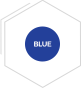

재단소개
선한 마음을 모아 삶을 아름답게 만드는 선의
home
재단소개
재단소개
선의요양병원
사회공헌사업
재단소식
후원·자원봉사 안내
선의의료재단 소개
선의의료재단 소개
인사말
선의정신
연혁
재단CI
조직도
오시는 길
재단CI
이웃을 향한
도움의 손길,
선천성 심장병 어린이들의
심장,
새 생명의
희망
맞잡은 두 손
맞잡은 두 손은 이웃을 향한 도움의 손길을 상징함과
동시에, 도움을 필요로 하는 선천성 심장병 어린이들의
심장을 의미합니다.

로고의 푸른 색
로고의 푸른 색은 선천성 심장병 어린이들에게 주는
새 생명의 희망을 나타냅니다.
CI 다운로드